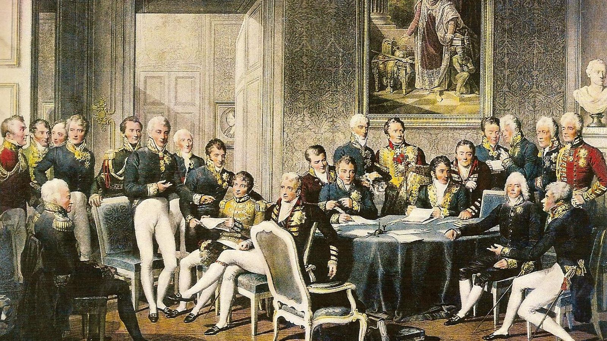
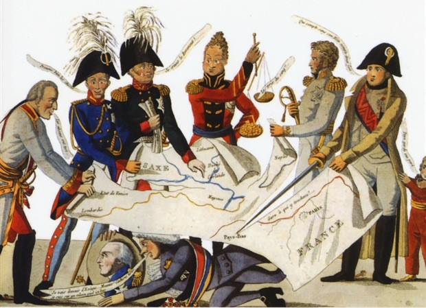
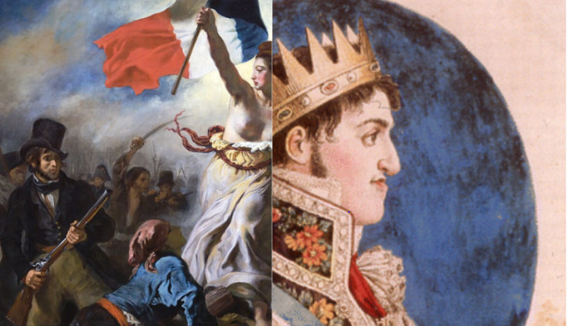
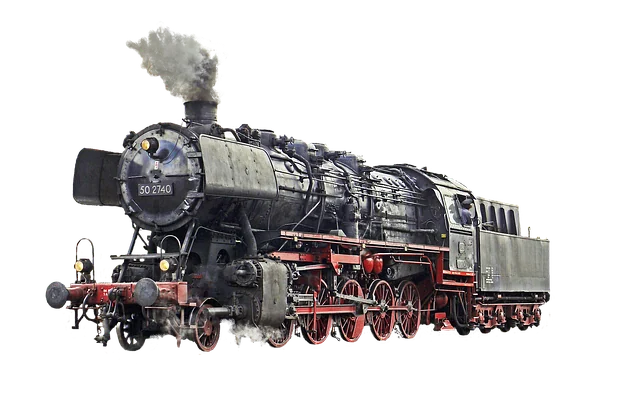
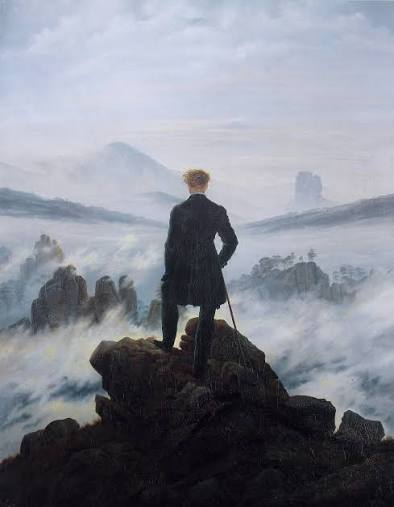
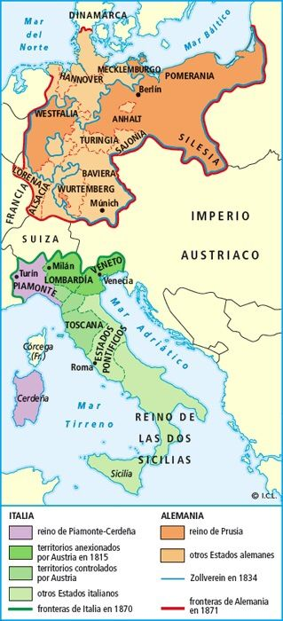
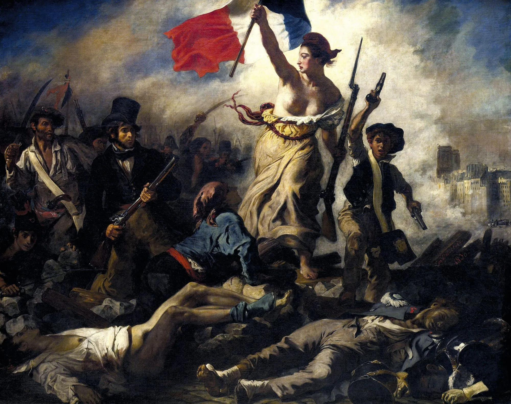

Inicio
«Del Trono y el Altar a la Primavera de los Pueblos: así cambió Europa»
Mundo post-napoleónico, Revolución Industrial, utopías sociales, Romanticismo y Nacionalismo
Recurso educativo interactivo para estudiantes
Pregunta histórica central
¿Cómo cambiaron a Europa la Restauración posterior a Napoleón y la Revolución Industrial, y por qué surgieron en el siglo XIX el liberalismo, el socialismo utópico, el Romanticismo y el nacionalismo?
Integrantes
- ALEJANDRO MANSILLA LUJAN
- CRISTIAN MENDOZA URVIOLA
- ENZO CASAPIA VILCA
- EMERSON NAVENTA CACERES
- CRISTOPHER MAQUERA MACHACA
- LUIS UNANCHA CHAVEZ
- LEONARDO RIVAS PARI
Contexto histórico
Después de más de veinte años de guerras, Europa buscaba recuperar la tranquilidad tras la caída de Napoleón. Los reyes estaban aliviados, pero también temían que se repitiera lo ocurrido en la Revolución Francesa, cuando el pueblo logró quitar del poder a sus gobernantes. (Hubeñák, pp. 277-278)

La Restauración
En el Congreso de Viena (1815) los gobernantes quisieron devolver el poder a las antiguas familias reales. Austria, Prusia y Rusia formaron la Santa Alianza para evitar nuevas revoluciones. La nobleza y la Iglesia recuperaron su poder: el «Trono y el Altar».

Liberales y conservadores
Europa quedó dividida: los liberales defendían la libertad, los derechos de las personas y gobiernos elegidos por representantes; los conservadores querían mantener el poder de los reyes y la influencia de la Iglesia católica.

La Revolución Industrial

Empezó en Gran Bretaña y cambió la forma de producir. La gente se fue del campo a las ciudades para trabajar en las fábricas y la sociedad se dividió entre burgueses (dueños de los medios de producción) y proletarios (que aportaban su trabajo). Aparecieron problemas sociales: largas jornadas, bajos salarios y malas condiciones de vida.
Utopías sociales
El socialismo utópico surgió a comienzos del siglo XIX como respuesta a las desigualdades. Buscaba una sociedad más justa, con reformas pacíficas y sin lucha de clases. Sus representantes fueron Saint-Simon, Charles Fourier y Robert Owen.
Romanticismo

Fue una rebelión contra la modernidad racionalista: puso el sentimiento y el individuo en el centro. Nació de la desilusión tras la Restauración y del rechazo a la Revolución Industrial.
Nacionalismo

Sostenía que una nación debía poder organizarse políticamente y formar su propio Estado. Hubeñák distingue una idea de nación más política (Francia) y otra cultural y romántica (Alemania).
Las revoluciones liberales (1820, 1830 y 1848)
Muchas personas no estaban de acuerdo con el regreso del absolutismo. En 1820 hubo levantamientos en España, Portugal, Nápoles y Grecia. En 1830, París se levantó contra Carlos X en las Tres Jornadas Gloriosas (27 al 29 de julio) y Bélgica se separó de los Países Bajos. En 1848, la «Primavera de los Pueblos» llegó a Francia, Austria, Hungría, los Estados alemanes y los territorios italianos, y provocó la caída de Metternich. Muchas de estas revoluciones fueron derrotadas, pero mostraron que las ideas liberales y nacionalistas seguían ganando fuerza.

Red interactiva de relaciones históricas
Cada recuadro es una causa, un acontecimiento, un actor, una idea o una consecuencia. Las flechas van de la causa hacia lo que provocó. Haz clic en un recuadro para leer qué fue y por qué se conecta con los demás. Con los botones puedes mostrar solo un tipo.
Haz clic en cualquier recuadro para ver su explicación.
Podcast: Europa después de Napoleón
Línea de tiempo con filtro
Cuestionario con retroalimentación
Conclusiones
Después de la caída de Napoleón, los reyes europeos intentaron volver al orden anterior mediante el Congreso de Viena y la Santa Alianza. Pero ese regreso al absolutismo no pudo mantenerse sin enfrentar las demandas de libertad, igualdad política e identidad nacional, y así Europa quedó dividida entre liberales y conservadores.
Al mismo tiempo, la Revolución Industrial transformó la economía y la sociedad: aumentó la riqueza, pero también apareció la «cuestión social», que dio origen a los sindicatos y a las utopías sociales. El Romanticismo expresó la desilusión frente a la Restauración y frente a la industria, y su interés por la lengua y las tradiciones de cada pueblo fortaleció el nacionalismo.
Las revoluciones de 1820, 1830 y 1848 muestran cómo todas estas ideas se unieron. Aunque muchas fueron derrotadas, debilitaron el absolutismo y prepararon una Europa diferente para la segunda mitad del siglo XIX.
Fuentes utilizadas
Fuentes principales
- Hubeñák, F. (2006). Historia integral de Occidente: desde una perspectiva cristiana. Buenos Aires: Educa. Capítulo 11, «El siglo XIX», pp. 277-340.
- Hubeñák, F. (2010). «Algunas reflexiones de un historiador sobre los términos Patria-Nación-Estado». Ponencia presentada en la Universidad Nacional de Cuyo.
- Hobsbawm, E. (1997). La era de la revolución: 1789-1848. Crítica.
- Berlin, I. (2000). Las raíces del romanticismo. Taurus.
- Safranski, R. (2009). Romanticismo: una odisea del espíritu alemán. Tusquets.
- Abrams, M. H. (1953). El espejo y la lámpara: teoría romántica y tradición crítica.
- Instituto Nacional de Tecnologías Educativas y de Formación del Profesorado (INTEF), España. Las oleadas revolucionarias: 1820, 1830 y 1848.
- INTEF – Ministerio de Educación de España. El liberalismo y los movimientos revolucionarios en Europa (1820-1830).
- INTEF – Ministerio de Educación de España. Las oleadas revolucionarias. Recurso educativo sobre las revoluciones de 1820, 1830 y 1848.
- Universidad Nacional de Educación a Distancia (UNED). Revoluciones Burguesas en Europa: 1820, 1830 y 1848.
- Universidad de Alicante. Francisco Carantoña Álvarez. La historiografía sobre el Trienio Liberal: entre el estigma del fracaso y el enfoque militante (2021).
- Hubeñák, F. (2006). Historia integral de Occidente: desde una perspectiva cristiana. Buenos Aires: EDUCA. Capítulo 11, «El siglo XIX», pp. 307-340.